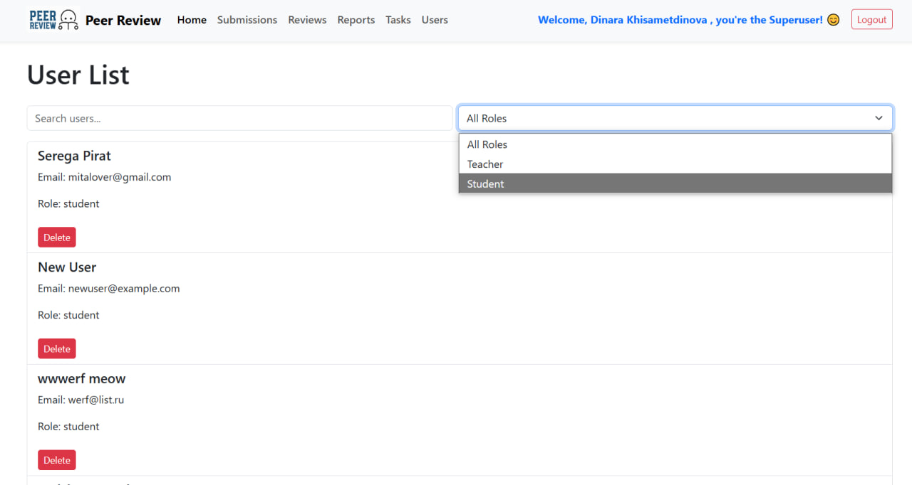

Users
Страница Users предоставляет возможность управления пользователями системы. Её функционал различается для суперпользователей и обычных авторизованных пользователей.

Основные возможности
Для суперпользователей:
- Просмотр полного списка пользователей.
- Добавление новых пользователей.
- Удаление пользователей.
Для обычных пользователей:
- Просмотр списка всех пользователей с их данными (имя, фамилия, роль).
- Фильтрация списка по ролям и поиску.
Особенности интерфейса
Для суперпользователей:
- Добавление пользователя:
- Форма с полями для имени, фамилии, роли и электронной почты.
-
Кнопка "Add User" для добавления нового пользователя.
-
Удаление пользователя:
- Кнопка "Delete" доступна для всех пользователей в списке.
Для обычных пользователей:
- Просмотр пользователей:
- Отображается список всех пользователей с их именем, фамилией, электронной почтой и ролью.
-
Функционал добавления и удаления недоступен.
-
Фильтрация и поиск:
- Поле для поиска пользователей по имени или фамилии.
- Выпадающий список для фильтрации пользователей по ролям (
student,teacher).
Сервис user.service.ts:
import { Injectable } from '@angular/core';
import { HttpClient } from '@angular/common/http';
import { Observable } from 'rxjs';
@Injectable({
providedIn: 'root',
})
export class UserService {
private baseUrl = 'http://127.0.0.1:8000/peer/users';
constructor(private http: HttpClient) {}
getUsers(): Observable<any[]> {
return this.http.get<any[]>(`${this.baseUrl}/`);
}
createUser(user: any): Observable<any> {
return this.http.post<any>(`${this.baseUrl}/create/`, user);
}
deleteUser(userId: number): Observable<any> {
return this.http.delete<any>(`${this.baseUrl}/${userId}/`);
}
}
API эндпоинты
- Получение списка пользователей:
GET /peer/users/-
Возвращает список всех пользователей.
-
Создание пользователя:
POST /peer/users/create/-
Поля:
first_name,last_name,email,role. -
Удаление пользователя:
DELETE /peer/users/<id>/
Работа с компонентом
Основные переменные
- users:
-
Список всех пользователей, загружаемый через API
/peer/users/. -
filteredUsers:
-
Список пользователей, отфильтрованных по имени, фамилии или роли.
-
newUser:
-
Объект для добавления нового пользователя, содержащий поля
first_name,last_name,email,role. -
filter:
-
Строка для поиска пользователей по имени и фамилии.
-
selectedRole:
- Текущая выбранная роль для фильтрации.
Алгоритм работы
Для суперпользователей:
- Добавление пользователя:
- Заполняются поля имени, фамилии, электронной почты и роли.
- Нажимается кнопка "Add User".
-
Новый пользователь создаётся через API
/peer/users/create/. -
Удаление пользователя:
- Нажимается кнопка "Delete" для соответствующего пользователя.
- Пользователь удаляется через API
/peer/users/<id>/.
Для обычных пользователей:
- Просмотр списка пользователей:
- Загружается список через API
/peer/users/. -
Отображается таблица с данными всех пользователей.
-
Фильтрация пользователей:
- Пользователь вводит запрос в строку поиска, и список обновляется динамически.
- Дополнительно можно выбрать роль для фильтрации пользователей.
Пример данных API
GET /peer/users/
[
{
"id": 1,
"first_name": "John",
"last_name": "Doe",
"email": "john.doe@example.com",
"role": "teacher",
"is_superuser": false
},
{
"id": 2,
"first_name": "Jane",
"last_name": "Smith",
"email": "jane.smith@example.com",
"role": "student",
"is_superuser": false
},
{
"id": 3,
"first_name": "Admin",
"last_name": "User",
"email": "admin@example.com",
"role": "admin",
"is_superuser": true
}
]